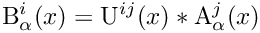
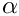
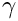
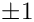
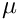
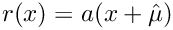

QDP Functions
The QDP functions are grouped into the following categories:
- Entry and exit from QDP
- Layout utilities
- Data Parallel Functions
- Creating and destroying lattice fields
- Array container objects
- Function objects
- Subsets
- Maps and shifts
- Temporary entry and exit from QDP
Entry and exit from QDP
QDP must be initialized before any other routine can be used. The initialization is broken into two steps – initializing the underlying hardware and initializing the layout.
Initialization of QDP
Call QDP::QDP_initialize(int *argc, char ***argv).
This routine will be responsible for initializing any hardware like the physical layer of the message passing system. For compatibility with QMP, the addresses of the main program's argc and argv arguments must be passed. They may be modified.
Shutdown of QDP
Call QDP::QDP_finalize().
This routine provides for an orderly shutdown of QDP. It is called by all nodes. It concludes all communications, does housekeeping, if needed and performs a barrier wait for all nodes. Then it returns control to the calling process.
Panic exit from QDP
Call QDP::QDP_abort(int status).
This routine may be called by one or more nodes. It sends kill signals to all nodes and exits with exit status status.
Entry into QDP
Call Layout::create().
This routine is called once by all nodes and starts QDP operations. It calls the layout routine with the parameters set in the namespace Layout specifying the layout. The layout is discussed in Layout utilities.
This step is separated from the QDP::QDP_initialize() above so layout parameters can be read and broadcasted to the nodes. Otherwise the layout parameters have to be set from the environment or fixed in the compilation.
Exit from QDP
Call Layout::destroy().
This call provides for an orderly exit from QDP. It is called by all nodes. It concludes all communications, does housekeeping, if needed and performs a barrier wait for all nodes. The communication layer is not finalized.
Layout utilities
Routines for constructing the layout are collected in the namespace Layout. The set and get routines provide a way to set parameters like the lattice size.
The layout creation function determines which nodes get which lattice sites and in what linear order the sites are stored. The Layout namespace has entry points that allow a user to inquire about the lattice layout to facilitate accessing single site data from a QDP lattice field. For code written entirely with other QDP calls, these routines may be ignored by the user, with the exception of the useful routine latticeCoordinate. However, if a user removes data from a QDP lattice object (see expose or extract) and wishes to manipulate the data on a site-by-site basis, the global entry points provided here are needed to locate the site data.
Some implementations may have a built-in tightly constrained layout. In flexible implementations there may be several layout choices, thereby allowing the user the freedom to select one that works best with a given application. Furthermore, such implementations may allow the user to create a custom layout to replace one of the standard layouts. As long as the custom layout procedure provides the entry points and functionality described here, compatibility with the remainder of the QDP library is assured.
QDP setup
- Layout creation
The layout creation routine Layout::create() described in Entry and exit from QDP generates predefined lattice subsets for specifying even, odd, and global subsets of the lattice. The QDP::rb set can be dereferenced to produce the QDP::even and QDP::odd subsets:
QDP::Subset QDP::even, QDP::odd, QDP::all, QDP::rb[0], QDP::rb[1], QDP::mcb[0], ...,QDP::mcb[1 << (QDP::Nd+1)]
It also creates the nearest-neighbor shifts for each coordinate direction.
- Defining the layout
There are set/accessor functions to specify the lattice geometry used in the layout. Generically, the accessors have the form:
Layout::setsomething(parameters)
The type of input information needed by the layout is as follows:
- Number of dimensions Nd. Must be the compile time dimensions.
- Lattice size (e.g., L0, L1, ..., LNd-1)
- SMP flag
These parameters are accessed and set with the following functions:
- void Layout::setLattSize(const multi1d<int>& size)
- Sets the lattice size for the data layout.
- No default value. Must always be set
- void Layout::setSMPFlag(bool)
- Turns on using multi-processor/threading.
- Default value is false, i.e. a single thread of execution.
- void Layout::setNumProc(int N)
- In a multi-threaded implementation, use N processors.
- Default value is 1, i.e. a single thread of execution.
Generic layout information
The following global entry points are provided in the Layout namespace. They provide generic user information.
- Returning the spacetime coordinates
The call to Layout::latticeCoordinate(d) returns an integer lattice field of type QDP::LatticeInt with a value on each site equal to the integer value of the dth space-time coordinate on that site.
- Lattice volume
int Layout::vol() returns the total lattice volume.
Entry points specific to the layout
The additional global entry points are provided in the Layout namespace. They reveal some information specific to the implementation.
- Node number of site
int QDP::Layout::nodeNumber(const multi1d<int>& x) returns logical node number containing site x.
- Linear index of site
int Layout::linearSiteIndex(const multi1d<int>& x) returns the linearized index for the lattice site x
- Map node and linear index to coordinate
multi1d<int> Layout::siteCoords(int node, int index) returns site coordinate x for the given node node and linear index index.
- Number of sites on a node
int Layout::sitesOnNode() returns number of sites assigned to a node.
The linear index returned by Layout::linearSiteIndex() ranges from 0 to Layout::sitesOnNode() - 1.
Data Parallel Functions
Data parallel functions are described in detail in Supported Operations. In the C++ API, there are overloaded functions that can be applied to site or lattice wide objects. Arbitrarily complicated expressions can be built from these functions. The design of the API describes that all operations are to be performed site-wise. The only connection between sites is via a map or shift function.
The class of operations are generically described by site-wise operations (the linear algebra part of the API), and shift (or map) versions. The latter generically involves communications among processors in a parallel implementation.
The operator style provided by the API thus allows operations like the following:
LatticeFermion A, B; LatticeColorMatrix U; B = U * A;
From the type declarations
typedef OLattice<PScalar<PColorMatrix<RComplex<float>, Nc> > > LatticeColorMatrix typedef OLattice<PSpinVector<PColorVector<RComplex<float>, Nc>, Ns> > LatticeFermion
(see QDP::LatticeColorMatrix and QDP::LatticeFermion etc. in Type definitions)
one can see a OLattice multiplies a OLattice. At each site, the U field is a scalar in spin space, thus a Scalar multiplies a PSpinVector, a vector in spin space. For each spin component, there is a PColorMatrix multipling a PColorVector. The multiplications involve complex numbers.
Thus we see that mathematically the expression carries out the product

for all lattice coordinates x belonging to the subset QDP::all. Here A and B are objects of lattice Dirac fermion fields and U is an onject of type lattice gauge field. The superscripts i and j refer to the color indices and the subscript 
This tensor product factorization of types allows for potentially a huge variety of mathematical objects. The operations between the objects is determined by their tensor product structure.
The API allows for operations to be narrowed to a subset of sites. The infix notation does not allow for extra arguments to be passed to an operation, so the subset is fixed via the target.
The API mandates that there is in use in even a complex operation, namely the target specifies the subset to use. To narrow an operation to a specific subset, one specifies the subset in the target as follows:
chi[even] = u * psi;
which will store the result of the multiplication on only the even subset QDP::even.
The C++ API differs from the C API signficantly in the name of functions. In C++ there is no need for naming conventions for the functions since one can overload the function name on the types of its arguments. More significantly, the C API uses a functional style where the destination of an operation is part of the arguments for an operation, and all functions return void. The C++ API uses an operator/infix style allowing complex expressions to be built.
Constant Arguments
In some cases it is desirable to keep an argument constant over the entire subset. For example the function
Complex z; LatticeFermion c, b; c[s] = z * b;
multiplies a lattice field of color vectors by a complex constant as in
c[x] = z*b[x]
for x in subset s.
Functions
In the C++ API all operations are functions that act on their argument and most functions return their results. Except for explicit shift functions and global reductions, these functions are point-wise. The C++ API differs from the C API in that there are no combined operations like adjoint with a multiply. Instead, one simply calls the adjoint function QDP::adj. Thus
c = adj(u)*b
carries out the product
c[x] = adj(u[x])*b[x]
for all sites x in subset QDP::all.
Gamma matrices
Multiplication of spin vectors and matrices by 
LatticeDiracFermion c, b; int n; c = Gamma(n) * b;
where the multiplciation is spin matrix times a spin vector. Right multiplication is also supported.
LatticePropagator q, r; int n; q = r * Gamma(n);
The QDP::Gamma provides an enumeration of all possible
Shift
A shift function is a type of map that maps sites from one lattice site to another. In general, maps can be permutation maps but there are nearest neighbor shift functions provided by default. They are implemented in QDP::shift. See the discussion of shifts below in Section Maps and shifts. Thus
c[s] = shift(b,sign,dir)
shifts an object along the direction specified by dir and sign for all sites x in destination subset s. Here sign = 
Creating and destroying lattice fields
The declaration of an object of some type say QDP::LatticeReal will call a constructor. The implementation guarantees the object is fully created and all memory needed for it is allocated. Thus, there is no need for the user to use new to create an object. The use of pointers is discouraged. When an object goes out of scope, a destructor is called which will guarantee all memory associated with the object is released.
There is no aliasing or referencing of two objects with the same internal data storage. Each object a user can construct has its own unique storage.
Array container objects
For convenience, the API provides array container classes with much limited facility compared to the Standard Template Library. In particular, one, two, three, and general N dimensional array container classes are available:
- multi1d
- multi2d
- multi3d
- multiNd
The benefit of two and higher dimension classes is that they can be allocated after they are declared. This is in contrast to the STL technique, which builds multi-dimensional arrays out of nested one-dimensional array, and one must allocate a nested array of array classes by looping over the individual elements allocating each one.
An array of container classes is constructed as follows:
multi1d< QDP::LatticeComplex > r(QDP::Nd); // a 1-D array of LatticeComplex multi2d< QDP::Real > foo(2,3); // a 2-D array of Real with first index slowest
Function objects
Function objects are used in the constructions of Sets/subsets and maps/shifts. The objects created by maps are themselves function objects. They serve the role as functions, but because of their class structure can also carry state.
A function object has a struct/class declaration. The key part is the function call operator. A generic declaration is something like:
struct MyFunction
{
MyFunction(int dir) : mu(dir) {}
Real operator()(const int& x)
{\* operates on x using state held in mu and returns a Real *\}
int mu;
}
A user can then use an object of type MyFunction like a function: %
MyFunction foo(37); // hold 37 within foo int x; Real boo = foo(x); // applies foo via operator()
Subsets
It is sometimes convenient to partition the lattice into multiple disjoint subsets (e.g. time slices or checkerboards). Such subsets are defined through a user-supplied function that returns a range of integers 0 ,1, 2, ... , n-1, so that if f(x) = i, then site x is in partition i. A single subset may also be defined by limiting the range of return values to a single value (i.e. 0). This procedure may be called more than once, and sites may be assigned to more than one subset. Thus, for example an even site may also be assigned to a time slice subset and one of the subsets in a 32-level checkerboard scheme. A subset definition remains valid until is destructor is called.
The layout creation routine Layout::create() described in Section Entry and exit from QDP generates predefined lattice subsets for specifying even, odd, and global subsets of the lattice. The QDP::rb set can be dereferenced to produce the QDP::even and QDP::odd subsets:
QDP::Subset QDP::even, QDP::odd, QDP::all, QDP::rb[0], QDP::rb[1], QDP::mcb[0], ..., QDP::mcb[1 << (QDP::Nd+1)]
- Defining a set
Subsets are first defined using a function object (see Section Function objects) through the construction of an object of type OrderedSet or UnorderedSet whose parent type is Set. This function object is created from a function type of object SetFunc. The SetFunc operator returns the subset number to which a lattice site belongs. Subsets are defined through the parent data type Subset. There are two derived useable (concrete) types called UnorderedSubset and OrderedSubset. The latter type is an optimization that assumes (and run-time enforces) that the subset of sites for a given site layout must be contiguous. It is an error if they are not. Clearly, this assumption is layout dependent and is used mainly by the system wide supplied QDP::even, QDP::odd, etc. subsets under compile time flags. A general user subset should be declared to be UnorderedSubset. In both ordered and unordered subsets, they are constructed from the corresponding OrderedSet and UnorderedSet.
- OrderedSet::make(const SetFunc& func)
- UnorderedSet::make(const SetFunc& func)
- int SetFunc::operator()(const multi1d<int>& x)
- int SetFunc::numSubsets()
These create a set based on the SetFunc that holds a number of subsets returned by SetFunc::numSubsets.
Here is an explicit example for a timeslice:
struct TimeSliceFunc : public SetFunc
{
TimeSliceFunc(int dir): mu(dir) {}
// Simply return the mu'th coordinate
int operator()(const multi1d<int>& coord)
{return coord[mu];}
// The number of subsets is the length of the lattice
// in direction mu
int numSubsets() {return Layout::lattSize()[mu];}
int mu; // state
}
UnorderedSet timeslice;
timeslice.make(TimeSliceFunc(3)) // makes timeslice in direction 3
It is permissible to call UnorderedSet::make() with a function object having only 1 subset. In this case the partition function must return zero if the site is in the subset and nonzero if not. (Note, this is opposite to the "true", "false" convention in C).
- Extracting a subset
A subset is returned from indexing a UnorderedSet or OrderedSet object.
- OrderedSubset::operator[](int i)
- UnorderedSubset::operator[](int i)
return the ith subset from a Set object.
The Set::make() functions allocates all memory associated with a Set. A Subset holds a reference to the original Set. A destructor call on a Set frees all memory.
- Using a subset
A subset can be used in an assignment to restrict sites involved in a computation:
LatticeComplex r, a, b; UnorderedSubset s; r[s] = 17 * a * b;
will multiply 17 * a * b only on sites in the subset s.
Maps and shifts
Shifts are general communication operations specified by any permutation of sites. Nearest neighbor shifts are a special case. Thus, for example,
LatticeHalfFermion a, r; r[s] = shift(a,sign,dir);
shifts the QDP::LatticeHalfFermion half fermion field a along direction dir, forward or backward according to sign, placing the result in the field r. Nearest neighbor shifts are specified by values of dir in the range [0, N_d-1]. The sign is +1 for shifts from the positive direction, and -1 for shifts from the negative direction. That is, for sign = +1 and dir =  
The subset restriction applies to the destination field r. Thus a nearest neighbor shift operation specifying the even subset shifts odd site values from the source a and places them on even site values on the destination field r.
- Creating shifts for arbitrary permutations
The user must first create a function object for use in the map creation as described in Section Function objects. Thus to use the make a map one uses a function object in the map creation:
- Map::make(const MapFunc& func)
Creates a map specified by the permutation map function object func. The func is a derived type of MapFunc and must have a multi1d<int> operator()(const multi1d<int>& d) member function that maps a source site to d. It creates an object of type map which has a function call template<class T> T Map::operator()(const T& a).
The coordinate map function object func above that is handed to the map creation function Map::make() maps lattice coordinates of the the destination to the source lattice coordinates. After construction, the function object of type Map can be used like any function via the operator(). It can be applied to all QDP objects in an expression.
The function object has an operator that given a coordinate will return the source site coordinates. An example is as follows:
struct naikfunc : public MapFunc
{
naik(int dir) : mu(dir) {}
multi1d<int> operator()(const multi1d<int>& x)
{\* maps x to x + 3*mu where mu is direction vector *\}
int mu;
}
For convenience, there are predefined Map functions named QDP::shift that can shift by 1 unit backwards or forwards in any lattice direction. They have the form
shift(const QDPType& source, int sign, int dir);
The construction of a Map object allocates all the necessary memory needed for a shift. Similarly, a destructor call on a Map object frees memory.
Temporary entry and exit from QDP
For a variety of reasons it may be necessary to remove data from QDP structures. Conversely, it may be necessary to reinsert data into QDP structures. For example, a highly optimized linear solver may operate outside QDP. The operands would need to be extracted from QDP fields and the eventual solution reinserted. It may also be useful to suspend QDP communications temporarily to gain separate access to the communications layer. For this purpose function calls are provided to put the QDP implementation and/or QDP objects into a known state, extract values, and reinsert them.
- Extracting QDP data
Use
void QDP::QDP_extract(multi1d<Type2>& dest, const Type1& src, const Subset& s)
to copy data values from field src to array dest, where
- Type1 is any lattice type
- Type2 is any corresponding scalar lattice type
The user must allocate the space of size Layout::sitesOnNode() for the destination array before calling this function, regardless of the size of the subset.
This function copies the data values contained in the QDP field src to the destination field. Only values belonging to the specified subset are copied. Any values in the destination array not associated with the subset are left unmodified. The order of the data is given by QDP::Layout::linearSiteIndex. Since a copy is made, QDP operations involving the source field may proceed without disruption.
- Inserting QDP data
Use void QDP::QDP_insert (Type1& dest, const multi1d<Type2>& src, const Subset& s)
to insert data values from array src, where
- Type1 is any lattice type
- Type2 any corresponding scalar lattice type
Only data associated with the specified subset are inserted. Other values are unmodified. The data site order must conform to Layout::linearSiteIndex. This call, analogous to a fill operation, is permitted at any time and does not interfere with QDP operations.
- Suspending QDP communications
If a user wishes to suspend QDP communications temporarily and carry on communications by other means, it is first necessary to call QDP::QDP_suspend.
No QDP shifts can then be initiated until QDP::QDP_resume is called. However QDP linear algebra operations without shifts may proceed.
- Resuming QDP communications
To resume QDP communications one uses void QDP::QDP_resume()
Generated by